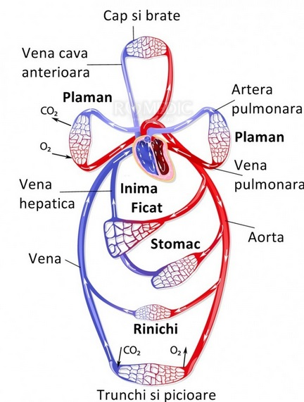

Sistemul circulator
Sistemul circulator este cel ce realizează mişcarea sângelui prin ȋntreg organismul. Inima şi vasele sanguine sunt cele mai improtante componente ale sistemului circulator. Fiecare bătaie ȋmpinge sângele ȋn vasele de sânge ce transportă: oxigen şi nutrimente către ţesuturi prin intermediul sistemului arterial şi produşi de degradare şi metaboliţi de la nivel tisular către cord prin intermediul sistemului venos. Sistemul limfatic este cea de- a treia componentă a sistemului circulator, iar mecanismul său de funcţionare va fi detaliat ulterior.
Anatomia sistemului circulator
Sistemul circulator este alcătuit din două sisteme reprezentate de:
- Sistemul vaselor sanguine;
- Sistemul vaselor limfatice.
Sistemul vaselor sanguine este alcătuit din următoarele componente:
Arterele – sunt vase ce pleacă de la nivelul cordului şi se ramifică pe traiectul lor la fel ca ramurile unui copac, devenind din ce ȋn ce mai mici, alcătuind arborele arterial ce ȋndeplineşte funcţia de transport la nivel tisular atât a nutrimentelor, cât şi a oxigenului.
Capilarele – sunt vase sanguine de mici dimensiuni ce formează o reţea difuză ce realizază numeroase anastomoze şi la nivelul cărora au loc schimburile dintre ţesuturi şi sânge.
Venele – sunt vase ce se formează prin unirea reţelei difuze a capilarelor, realizând un sistem ramificat ce porneşte ȋn mod opus arborelul arterial, de la terminaţii subţiri către canale progresiv mai largi.
Sistemul limfatic este alcătuit din:
Un sistem complex de capilare ce colectează limfa de la diferite organe şi ţesuturi;
Un sistem elaborat de vase ce colecteză şi conduc limfa de la nivelul capilarelor la nivelul venelor gâtului şi anume: la nivelul confluării dintre vena jugulară internă stângă şi subclaviculara stângă pentru ductul toracic şi confluarea dintre vena jugulară internă dreaptă şi subclaviculara dreaptă pentru ductul limfatic drept;
Organe limfoide şi noduli (ganglioni) limfatici ce sunt localizaţi pe traiectul vaselor colectoare şi au drept scop filtrarea limfei şi ȋmbogăţirea ei cu limfocite.
Structura vaselor sanguine
Structura vaselor sanguine este una generală reprezentată de cele trei straturi: intima, media şi adventicea, la care se adaugă diferite modificări şi adaptări specifice fiecărui sistem.
Cele trei straturi, de la interior spre exterior, sunt:
1. Intima - este alcătuită la rândul ei din mai multe straturi reprezentate de: endoteliul ce este localizat la nivelul laminei bazale; ţesutul subendotelial ce este reprezentat de ţesut conjunctiv lax şi fibre musculare netede cu dispoziţie longitudinală şi membrana elastică limitantă internă ce este prezentă doar la nivel arterial, fiind alcătuită din numeroase fibre elastice, cu multiple fenestraţii.
2. Media – este alcătuită din multiple straturi concentrice reprezentate de fibre musculare ce au o dispoziţie helicoidală, la care se adaugă numeroase fibre elastice, fibre reticulare, proteoglicani. Această tunica este limitată la exterior de membrana limitantă externă.
3. Adventicea – este alcătuită din ţesut conjunctiv cu numeroase fibre de colagen de tip I, fibre elastice dispuse longitudinal. La nivelul vaselor mari, la nivelul adventicei, se poate identifica şi vasa vasorum ce se defineşte ca fiind un strat ce conţine numeroase vase ce realizează vascularizaţia adventicei şi porţiunii externe a mediei. Vasa vasorum este mai bine dezvoltată la nivelul venelor. Ȋn ceea ce priveşte capilarele limfatice, acestea se pot găsi la nivelul adventicei pentru artere, iar pentru vene, acestea pot penetra şi ajunge până la medie.
Inervaţia vaselor se realizează prin intermediul unei reţele de fibre nervoase nemielinizate simpatice ce mai poartă denumirea şi de nervi vasomotori şi formează nervi vascularis. Fibrele nervoase sunt mai numeroase la nivelul venelor decâ la nivelul arterelor.
Terminaţiile nervoase aferente de la nivel arterial se pot clasifica ȋn baroreceptori şi chemoreceptori.
Baroreceptorii se pot identifica la nivelul:
Sinusului carotidian, localizaţi imediat sub bifurcaţia carotidei primare, iar terminaţiile nervoase provin din nervul XI;
Arcului aortic.
Chemoreceptorii se pot identifica la nivelul:
Corpusculului carotidian, fiind localizat la nivelul bifurcaţiei carotidei şi este alcătuit din două tipuri de celule glomice;
Corpusculului aortic, ce este localizat ȋntre subclaviculară şi carotida dreaptă, pe dreapta şi ȋn apropierea subclavicularei stângi pe stânga.
A. Arterele
sunt vasele eferente de la nivelul cordului, adică toate vasele ce pleacă de la acest nivel. Au formă tubulară, asemenea unor conducte, şi pe traiectul lor se bifurcă şi se subţiază totodată, toată circulaţia arterială având aspect arborescent.Dimensiunile lor sunt diferite, acestea putând fi clasificate ȋn funcţie de acest criteriu:
Arterele de mari dimenisuni sau arterele elastice sunt reprezentate de: aorta, ramurile sale mari, subclaviculara, carotida comună, artera iliacă şi arterele pulmonare.
Arterele medii sau musculare ce mai sunt denumite şi artere de distribuţie sunt reprezentate de arterele ce realizează vascularizaţia viscerelor.
Arterele de mici dimensiuni sau arteriole ce se clasifică la rândul lor ȋn arteriole mari şi mici.
Structura arterelor mari este reprezentată de cele trei tunici elementare: intima, media şi adventicea la care se adaugă periadventicea, ce are drept scop poziţionarea arterei pe traiectul său.
Intima este alcătuită din:
Endoteliu ce se continuă şi la nivelul cordului, constituind endocardul şi este reprezentat dintr-un epiteliu simplu pavimentos. Celulele endoteliale au drept scop realizarea unei permeabilităţi selective ce facilitează o difuziune simplă pentru oxigen şi dioxid de carbon, transportă activ glucoza, aminoacizii şi electroliţii, realizează endocitoză pentru diverse molecule precum: LDL colesterol, factori de creştere, transferină. De asemenea, celulele endoteliale ȋmpiedică apariţia trombilor prin controlul trombozei, trombolizei şi agregabilităţii palchetare, elaborând molecule anticoagulante şi antitrombotice (prostaciclină, activator al plasminogenului, molecule heparin-like), molecule protombotice precum factorul von Willebrand şi echilibrează fluxul sanguin şi reactivitatea vasculară prin intermediul substanţelor vasoconstrictoare şi vasodilatatoare.
Subendoteliul - este un ţesut conjunctiv cu numeroase fibre de colagen tip I şi tip II, ȋntr-o matrice bogată ȋn proteoglicani.
Membrana elastică limitantă internă ce este alcătuită din elastină dispusă lamelar.
Media este alcătuită din lame elastice formate din fibre elastice fuzionate. Acestea sunt dispuse sub formă de spirale, şi sunt conectate prin punţi. Printre lamele elastice pot fi identificate şi fibre musculare netede.
Adventicea este alcătuită din ţesut conjunctiv lax, iar la nivelul ei se găseşte şi vasa vasorum ȋmpreună cu terminaţii nervoase şi are rolul de a fixa arterele pe traiectul lor, rol suplimentat prin intermediul periadventicei.
Structura arterelor medii şi mici este reprezentată tot de cele trei component de bază: intima, media şi adventica, ȋnsă cu anumite modificări specifice faţă de arterele de mari dimensiuni.
Intima este de astă dată aclătuită din endoteliu şi din ţesut endotelial, acesta din urmă putând fi chiar absent la nivelul arteriolelor. Membrana limitantă elastică internă are un aspect crenelat pentru arteriole şi pentru arterele medii.
Media este alcătuită din miocite contractile ce sunt dispuse laminar, ȋn 10-38 de straturi concentrice. Pe lângă miocitele contractile se pot identifica şi miocite secretorii ce sintetizează matricea extracelulară alături de prostacicline, factori de creştere şi factori chemotactici. La nivelul mediei poate apărea şi metaplazia fibroelastică din cadrul aterosclerozei. Numai la nivelul arterelor de calibru mare se poate identifica şi membrana elastică limitantă externă.
Adventicea este alcătuită din ţesut conjunctiv lax, ce este bogat ȋn colagen de tip I. Vasa vasorum este prezentă până la nivelul membranei elastice limitante externe, alături de terminaţiile nervoase. Terminaţiile nervoase de origine simpatică determină pe musculatura arterială vasoconstricţie (numai la nivelul coronarelor determină vasodilataţie), iar parasimpaticul determină vasodilataţie.
-
B. Venele
sunt formaţiuni tubulare, vase de capacitanţă şi pot fi de asemnea clasificate astfel:
Vene mari: vena cava superioară, vena cava inferioară, venele pulmonare;
Vene medii şi mici: vena jugulară externă, vena jugulară internă;
Venule.
Venele prezintă aceeiaşi structură generală reprezentată de intima, medie şi adventice, ȋnsă la fel ca şi ȋn cazul arterelor, acestea prezintă anumite specificităţi.
Intima este alcătuită din endoteliu şi ţesut endotelial, ȋnsă membrana limitantă elastică internă lipseşte.
Media este alcătuită din ţesut muscular, fibros şi elastic, ȋnsă ȋn cantitate mai mică decât la nivelul arterei omonime.
Adventicea este de această data mai groasă decât la nivel arterial, cu vasa vasorum foarte bogată şi cu numeroase terminaţii nervoase.
La nivelul porţiunii inferioare a corpului, venele sunt adaptate cu valve ce se formează prin plierea intimei, fragmentând astfel coloana de sânge, scăzând presiunea de la nivel parietal şi deteminând o singură direcţie de circulaţie a fluxului sanguin.
-
C. Vasele limfatice
Vasele limfatice sunt extrem de fragile, straturile lor fiind uneori translucide. Ele sunt ȋntrerupte din loc ȋn loc de porţiuni ȋngustate, traiectul lor având aspect nodular. Acest aspect este determinat de prezenţa valvelor, ȋn mod similar venelor. Ȋn ceea ce priveşte structura parietală, aceasta este similară venelor (intimă, medie, adventice) pentru vasele limfatice mari.Intima este subţire, transparentă, uşor elastică şi este alcătuită dintr-un strat de celule endoteliale ce este susţinut de o membrană elastică.
Media este alcătuită dintr-un strat muscular neted şi fibre elastice distribuite transversal.
Adventicea este alcătuită din fibre musculare netede cu dispoziţie longitudinală sau oblică ce se ȋntrepătrund cu fibre conjunctive de la nivelul ţesuturilor ȋnconjurătoare.
Valvele de la nivelul vaselor limfatice sunt alcătuite din ţesut fibros ȋmbrăcat de ţesut endotelial. Ȋn ceea ce priveşte forma, valvele sunt semilunare şi sunt ataşate prin intermediul marginii convexe la nivel parietal, marginile concave fiind libere şi poziţionate ȋn sensul fluxului limfatic. De obicei, valvele sunt localizate sub formă de perechi, una ȋn faţa celeilalte, ȋnsa uneori se pot identifica şi anomalii, ȋn special ȋn apropierea anastomozelor. La nivelul vaselor limfatice, spre deosebire de vene, valvele sunt localizate la intervale mai mici, iar numărul lor creşte ȋn apropierea organelor limfoide, la nivelul vaselor limfatice cervicale şi ale membrelor superioare.
Pe traiectul vaselor limfatice se pot identifica ganglionii limfatici ce au rol ȋn filtrarea limfei şi ȋmbogăţirea acesteia cu limfocite.